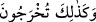

kalblerin semâsının ortasında furkân güneşinin istivâsı, güneşin aynında kalarak
ma‘rifetlerin varlığının yok olması sırasında Allâh’ı tesbih edin. Çünkü her iki durumda
kazanmak da kaybetmek de bu iki topluluğa âiddir. Çünkü Allah âlemlerden
müstağnîdir. Önceki iki âyetin ardından fâ-i tâkîb ile gelen “ ifâdesi, Allâh’ın
hazret-i celâline nisbet edilen eksik ve kusurlardan münezzeh olduğuna işâret eder.”
19. Ölüden diriyi, diriden de ölüyü O çıkarıyor; yeryüzünü ölümünün ardından O
canlandırıyor. İşte siz de (kabirlerinizden) böyle çıkarılacaksınız.
“Ölüden diriyi” O çıkarıyor. Mesela nutfeden insanı, yumurtadan kuşu, kâfirden
mü’mini, ifsâd edip bozandan ıslah edip düzelteni, câhilden âlimi çıkarır. Yine lütfunu
ve rahmetini ortaya çıkarmak için yerilen sıfatlarından ve ahlâkından ölmüş nefisten
Allâh’ın nûru ile diri olan kalbi çıkarır. “diriden de ölüyü O çıkarıyor.” Mesela
canlılardan nutfe ve yumurtayı; mü’minden, ıslah edip düzeltenden ve âlimden kâfiri,
ifsâd edip bozanı ve câhili çıkarır. Yine kahrını ve izzetini ortaya çıkarmak için
hayvânî-şehevânî sıfatlarla diri olan nefisten övülen rûhânî ahlâktan ölmüş kalbi çıkarır.
“Yeryüzünü ölümünün” kuraklığının ve kuruluğunun “ardından” yağmur ve bitkilerle
“O canlandırıyor. İşte siz de” kabirlerinizden diri olarak “böyle” bu çıkarmada olduğu
gibi “çıkarılacaksınız” ve hesap yerine sevk edileceksiniz. Yine hayat ölümü takip
eder/peşinden gelir. Hulâsa ilk yaratma ve tekrar yaratma Allâh’ın kudretinde eşittir.
Mukâtil der ki: “Allah, kıyâmet günü sûra iki üfleme arasında yedinci kat semâdaki
kaynatılmış denizden (bk. et-Tûr, 52/6) hayat suyunu gönderir ve ölülerin kemiklerini
diriltir. Nitekim âyette “İşte siz de (kabirlerinizden) böyle çıkarılacaksınız”
buyrulmaktadır. Bitkilerin yerden yağmur ile bittiği gibi insanlar da meni gibi
kaynatılmış denizin yağmuruyla kabirlerden bitip çıkarlar ve onunla hayat bulurlar.
Âyetin işâreti ise şöyledir: Allah kalplerin toprağını öldürdükten sonra tekrar diriltir.
İşte siz de böylece ilâhî kudret ile yokluktan varlığa çıkarılırsınız.
Bir hadîste şöyle buyrulmuştur: “Kim sabaha çıktığında “”
âyetinden “”a kadar (17-19. âyetler) okursa o gece kaçırdıklarını elde
etmiş olur. Kim de akşama ulaştığında bu âyetleri okursa gündüzün kaçırdıklarını
elde etmiş olur.”[21]
Keşfü’l-esrâr’da İbn Abbâs (r.a.)’dan rivâyet edildiğine göre Rasûlullah (s.a.) şöyle
buyurmuştur: “Kim “” diye başlayan Rum suresinin bu üç âyetini
ve Sâffât sûresinin sonunu kıldığı her namazın ardından okursa, ona gökteki
yıldızlar, yağmur damlaları, ağaç yaprakları ve yeryüzündeki toprak sayısınca sevab